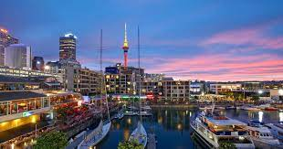
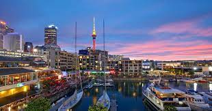

Auckland, New Zealand
 

Geographical Location: Australia
Auckland is the largest city in New Zealand located on the Northern Island of the country. The city's population is just below 1.7 million people. Auckland is known as the “City of Sails” for its plethora of sailboats and yachts. The vast amount of waterfronts and harbors are conveniently located for sailors to embark on their hobbies.
Aside from sailing and waterfronts, Auckland is also surrounded by 48 volcanoes and a few rainforests. The climate of Auckland is mild-temperate. The winters are not too cold (averaging 64 degrees Fahrenheit) and summers mildly harsh (around 80 degrees Fahrenheit).
Photo Gallery

Located in Western Auckland, Browns Island is home to one of the oldest volcanoes. It erupted over 20,000 years ago, and has since been become a famous tourist destination

Eden Park is New Zealand's largest stadium located in Auckland, with a capacity of 50,000. The stadium has been the country's largest since 1910, and has hosted rugby, cricket, and soccer games.

Built in the 1920s, the War Memorial Museum in Auckland is one of the oldest and most significant museums in New Zealand. It serves as a homage to the country’s military, and is also a research institution for social and environmental matters.
Tiritiri Matangi Island is located in Auckland and is among the oldest wildlife sanctuaries in the country. The island is brimming with animals unlikely to be found on the mainland. It is also known as a nature conservancy island.

Constructed in 1954, the Auckland Harbour Bridge connects the main city to the north shore. It is a bridge for motor vehicles with 8 lanes. The bridge is also equipped with 90,000 LED lights, allowing it to shine bright at night.